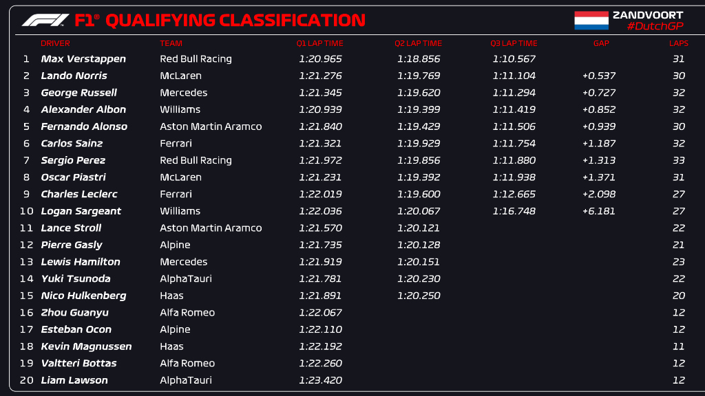

WHAT IS FORMULA ONE?
Formula One (more commonly known as Formula 1 or F1) is the highest class of international racing for open-wheel single-seater formula racing cars sanctioned by the Fédération Internationale de l'Automobile (FIA). The FIA Formula One World Championship has been one of the premier forms of racing around the world since its inaugural running in 1950. The word formula in the name refers to the set of rules to which all participants' cars must conform. A Formula One season consists of a series of races, known as Grands Prix. Grands Prix take place in multiple countries and continents around the world on either purpose-built circuits or closed public roads.
A points system is used at Grands Prix to determine two annual World Championships: one for the drivers, and one for the constructors (the teams). Each driver must hold a valid Super Licence, the highest class of racing licence issued by the FIA,[2] and the races must be held on grade one tracks, the highest grade-rating issued by the FIA for tracks.

RACES
The race begins with a warm-up lap, after which the cars assemble on the starting grid in the order they qualified. This lap is often referred to as the formation lap, as the cars lap in formation with no overtaking (although a driver who makes a mistake may regain lost ground). The warm-up lap allows drivers to check the condition of the track and their car, gives the tyres a chance to warm up to increase traction and grip, and also gives the pit crews time to clear themselves and their equipment from the grid for the race start.
Once all the cars have formed on the grid, after the medical car positions itself behind the pack, a light system above the track indicates the start of the race: five red lights are illuminated at intervals of one second; they are all then extinguished simultaneously after an unspecified time (typically less than 3 seconds) to signal the start of the race. The start procedure may be abandoned if a driver stalls on the grid or on the track in an unsafe position, signalled by raising their arm. If this happens, the procedure restarts: a new formation lap begins with the offending car removed from the grid.